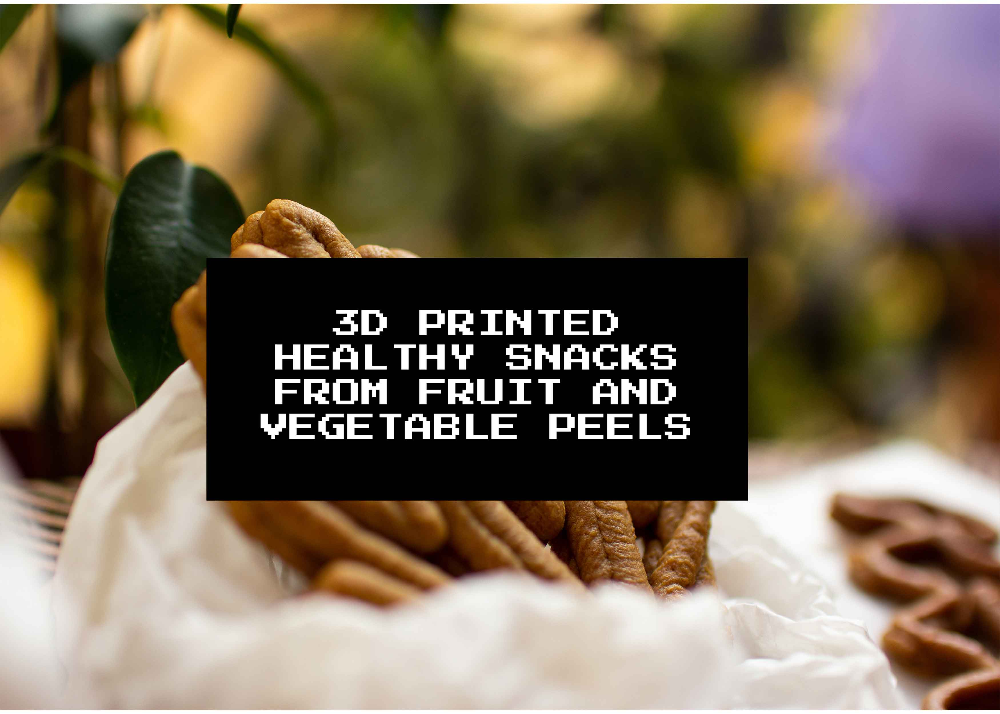
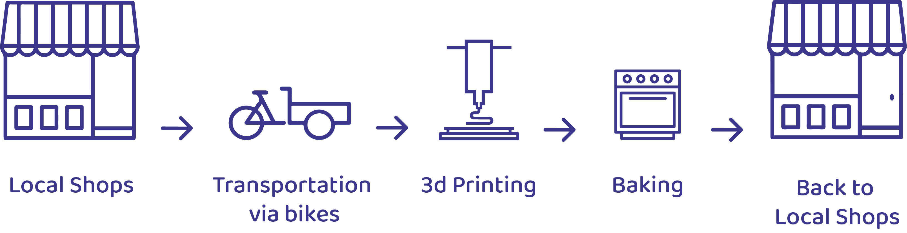

LOOK
MA
NO
HANDS!

Look Ma' No Hands project challenges the question of what is a waste. In modern kitchen habits, mostly in western countries, people tend to discard their peels. However, it is well known that these discarded peels contain a high amount of fiber, vitamins, and nutrients like the fleshy part.
Starting from El Poblenou, we are creating partnerships with organic restaurants and coffee shops in Barcelona. By going around the city with cargo bikes, we collect the discarded fruit and vegetable peels from them.

After collecting the peels, they have combined with delicious recipes and designed with a 3D printer.
